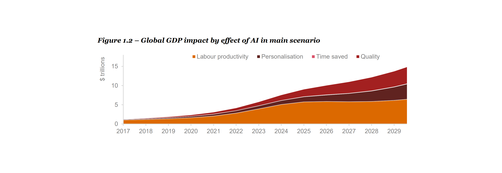
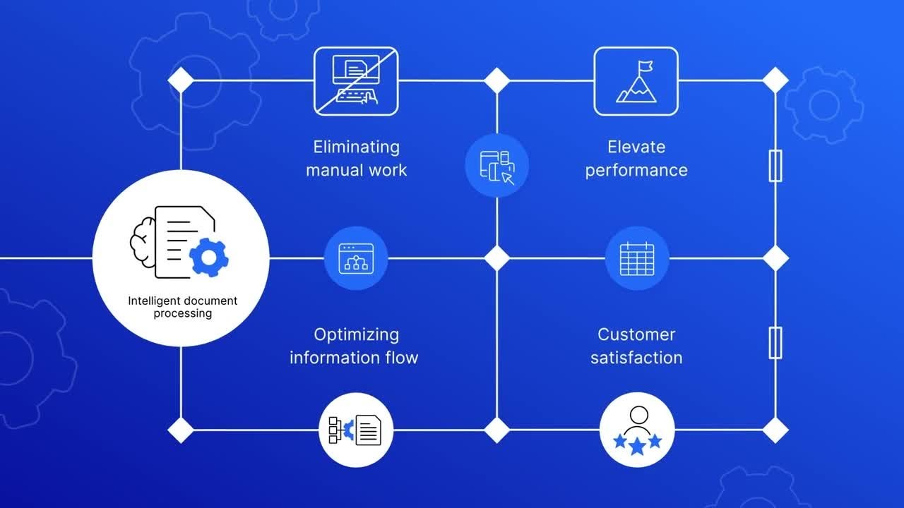

In the grand scale of the economy, massive amounts of time, resources and consequently money are being put towards basic,
automatable tasks. For example, a study from Cornell University (1) estimates that 84% of the 143 million complex transactions
conducted by the UK government are prime candidates for AI-powered automation. Using generative AI to perform basic tasks allows employees to focus on issues that require human intervention
or judgement, which would provide immense benefit to the economy.

If implemented correctly, the speed that Generative
AI is able to perform simple, predictable tasks cannot be matched without significant investment into massive numbers
of highly trained staff. Additionally, Generative AI can streamline other aspects of work; summarising e-mails, assisting
with filling in paperwork and more- due to Generative AI’s adaptability, it can be used in many roles.
This flexibility can extend to the private sector as well; retail businesses have been implementing AI tools into their workflows.
The primary aspect that companies are pushing to automate is customer assistance. Due to the adaptable nature of Generative AI,
it is able to mediate basic requests from customers, allowing businesses to focus their customer service’s efforts on unique and
important problems. (2)
In addition to customer support, AI can be used to streamline customer’s interactions with a retailer,
whether it be online or in-person. Around 80% of consumers expressed interest in AI shopping assistance (3),
indicating that an AI assistant providing advice, directions and other information could be well-received.
The
benefits of this would be twofold; customers can leverage the knowledge of the AI to shop more efficiently, and retail
companies can use the data from the customer’s interaction with the AI to aid in planning; for example, if a large group of
customers start asking for specific products, the retailer can pass the information onto the supplier, and order products in
advance to avoid a shortage.
Additionally, the nature of Generative AI means that these “companion apps” could become everyday
tools! For example, a shopping assistant could suggest recipes, drawing from information on the customer’s personal tastes,
schedule, deals and promotions from the store, and even sponsored products. Overall, the benefits of this approach are obvious.
This model of interconnected AI assistants could be expanded to the workplace,
removing the workload associated with scheduling, coordination and productivity
monitoring. This frees up employees in middle management or supervising roles to provide
value to roles where humans are essential, such as sensitive internal HR operations.
Generative Artificial Intelligence (AI) has boomed in popularity as one of the most influential inventions
in the 21st century. The effects it has already had are monumental, and while people still debate the scale
of the effect, it is showing massive potential in many areas of real-world applications. Unlike traditional
AI, which analyses and predicts, generative AI creates. Its potential to increase productivity, resource
optimization, and innovation are just a few examples.
Since the release of ChatGPT by OpenAI in late 2022, the first widely accessible Large Language Model
(LLM) or Generative AI, the idea of generative AI has moved from experimental technology to widespread
use across every industry. This study examines how generative AI has positively affected global economic
growth.

The contributions AI has made to global economic growth can be seen in two main areas: productivity and innovation.
The effects that AI has on productivity can range from supply chain optimization to task automation and many more.
As per McKinsey & Company (2023), it is projected that artificial intelligence could contribute between $2.6 trillion
and $4.4 trillion each year to the global economy. Furthermore, this estimate has the potential to double if the integration
of AI into existing software utilized for various projects is considered. This is larger than the entire GDP of the United Kingdom.
(4) Similarly to this, PricewaterhouseCoopers (PwC) found that in 2016 the global GDP was around $75 trillion and that it was estimated to
reach $114 trillion by 2030; however, AI could increase this by up to 14% or an additional $15.7 trillion. (5) AI is not just limited to
optimization and can create new software or other new technologies, such as self-driving cars. This allows AI to not only grow the current
economy but also create entirely new ones. All of this together means that the generative AI market is projected to pass $1.3 trillion by 2032 (6)
The USA has long maintained a leading position in AI research, funding, and commercialisation. Giants in the tech industry like Google (Alphabet), Microsoft,
Amazon, and NVIDIA play significant roles in the global AI ecosystem, and their stake is only growing. Internally, businesses like Google have started utilizing
AI to streamline more routine operations like finding and repairing problems or generating ideas and using generative AI as a creative assistant. By more effectively
matching candidates to their ideal positions, they also employ the same technique to expedite the hiring process. (7)
According to a 2024 Stanford study, customer
service representatives who had access to generative AI technologies were up to 14% more productive, especially when they were less seasoned workers. (8)
The European Union (EU) has taken a far more careful approach to the use of generative AI. The EU Artificial Intelligence Act (approved in 2024) is
the “world’s first comprehensive legal framework on AI” (9) which details the risks and rules surrounding AI use in the EU. However, this more cautious
approach has not reduced the positive effects of generative AI across the economy of the EU. According to the European Commission, a widespread adoption of
AI could increase the GDP by 7% over a decade. (10) Through the use of “Innovative Technologies” (10), enabling more optimized planning and organisation within
the workforce, labour productivity will increase by 40% according to an EU parliament briefing. It also details that the use of AI will generate a digital workforce
that will be able to learn while solving problems. (10)
Globally, generative AI is reshaping labour markets by automating routine, repetitive tasks. Differing from other automation waves, which were primarily robots affecting
manual labour, generative AI affects creative and professional roles. This could affect employment everywhere; however, according to Goldman Sachs:
“Frictional unemployment
is not unique to AI” (11), and after a few years, the unemployment wave will have no noticeable impact. The use of generative AI in developed markets could also increase overall
work productivity by up to 15% when effectively incorporated. (11)
Generative AI may cause a global divide as more advanced economies have far more resources to put into training and development of more advanced models.
Countries with less advanced economies and lower income will benefit less from AI due to fewer resources to train and create models, and due to disparities
in education and infrastructure. Despite this, generative AI is also a more level playing field in some respects, such as allowing people access to more
information due to translation or allowing multiple views of a certain subject easily to anyone. (12)

Training large language models requires a large amount of resources, both technical and physical. The computational power required to train
AI models is immense, producing a huge amount of CO2 annually. However, according to a study by arxiv (13), estimates for how much CO2 is created
are often largely wrong and range from 100x to 100,000x too big. Also, governments and corporations are increasingly adopting responsible AI frameworks
to reduce the damage to the environment caused by AI.
Generative AI has massive potential in the global economy. It increases productivity, efficiency, and optimization, fuels innovation, and opens new
possibilities for advanced and creative technologies. Countries all over the world are playing vital parts in the production and research of generative AI.
The USA leads in discovery and research, whilst the EU creates regulations and safety surrounding this new technology. With everything together, AI is becoming
more than just a stunt but something essential to redefining the global economic environment.